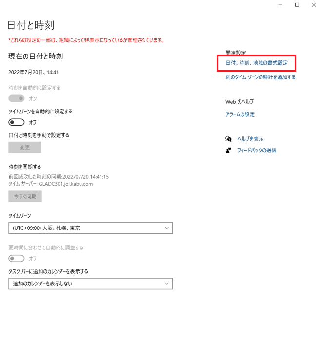
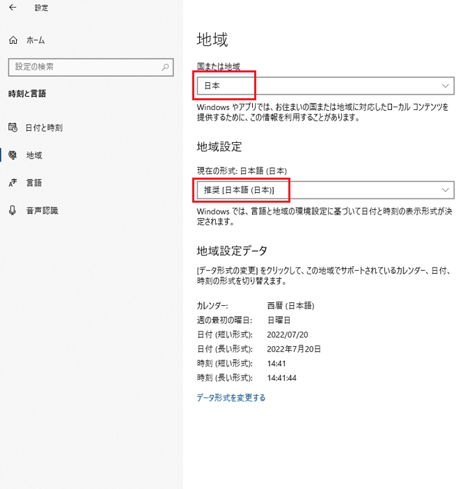
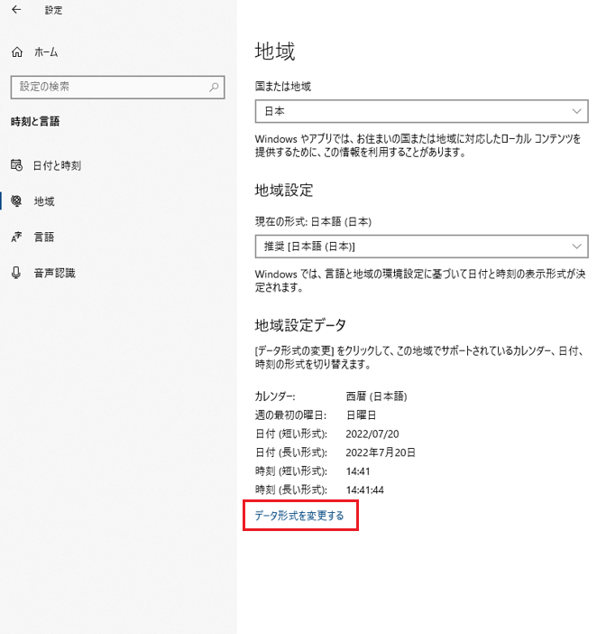
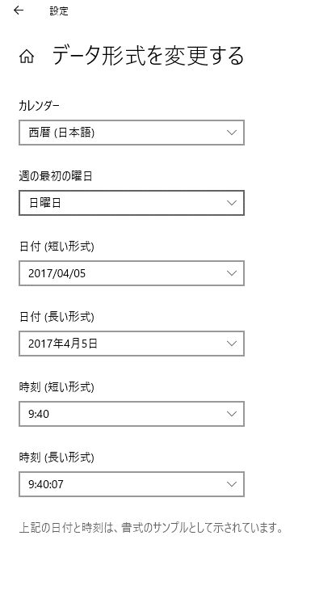

タイムゾーン、日付、時刻、地域等の設定
 kabuステーション®、kabuステーション®APIを実行するPCのタイムゾーンは、日本時間(UTC+09:00)を設定ください。
また、日付のデータ表示形式は西暦を設定ください。
kabuステーション®、kabuステーション®APIを実行するPCのタイムゾーンは、日本時間(UTC+09:00)を設定ください。
また、日付のデータ表示形式は西暦を設定ください。
※正しい設定をしない場合、各APIのレスポンス項目にある日時が、正確に取得できない可能性があります。

タイムゾーンの設定方法
日付、時刻、地域の書式設定
日付、時刻、地域の書式設定
- 日付、時刻、地域の書式設定 をクリックします。

- 国または地域 を 「日本」、現在の形式 を 「推奨[日本語（日本）]」と設定します。

- データ形式を変更する をクリックします。

- 各項目は下記のように設定します。
